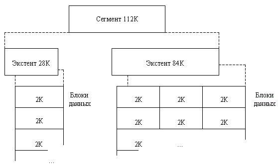
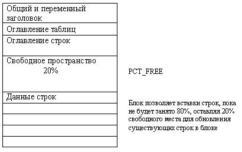
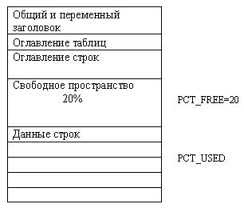

Логическая структура
Структуры логического распределения в базе данных Oracle
Oracle распределяет пространство БД для всех ее логических единиц (таблиц, индексов и т.п.). Единицами логического распределения в Oracle являются блоки данных, экстенты и сегменты. Следующий рисунок иллюстрирует отношения между этими структурами данных.

Рисунок 1 - Отношения между сегментами, экстентами и блоками данных
Блоки данных
На самом низком уровне рассмотрения, данные базы данных ORACLE хранятся в блоках данных (называемых также логическими блоками, блоками ORACLE или страницами). Один блок данных соответствует фиксированному числу байт физического пространства базы данных на диске. Размер блока данных специфически устанавливается для каждой базы данных ORACLE при ее создании. Этот размер кратен размеру блока операционной системы, но не превышает определенный максимум. Важно помнить, что база данных, на ее самом низком уровне, использует и распределяет свободное пространство в базе данных блоками данных ORACLE.
Все данные на физическом уровне, т.е. на уровне операционной системы, распределяются в байтах. Каждая операционная система имеет то, что называется размером блока, который определяется как специфическое число байт на диске.
Экстенты
Следующий уровень логического пространства базы данных называется экстентом.
Экстент - это специфическое число смежных блоков данных, распределяемых для хранения специфического типа информации.
Сегменты
Уровень логического пространства базы данных, следующий за экстентом, называется сегментом.
Сегмент - это совокупность экстентов, распределенных для специфического типа структуры данных, и находящихся в одном и том же табличном пространстве. Например, данные каждой таблицы хранятся в ее собственном сегменте данных, а данные каждого индекса хранятся в его собственном сегменте индекса.
ORACLE распределяет пространство для сегментов экстентами. Поэтому, когда существующие экстенты сегмента заполнены, ORACLE распределяет очередной экстент для этого сегмента. Поскольку экстенты распределяются при необходимости, экстенты сегмента не обязательно смежны на диске, и могут быть распределены между различными файлами. Каждый экстент, однако, не может находиться в нескольких файлах.
Управление пространством
Итак, ORACLE управляет пространством в файлах данных базы данных в единицах, называемых блоками данных (наименьшими единицами ввода-вывода в базе данных).
Формат блока данных ORACLE один и тот же, независимо от того, содержит ли блок данные таблицы, индекса или кластера. Рис.2 иллюстрирует формат блока данных.
Таблица 1 - Формат блока данных
Блок базы данных |
Общий и переменный заголовок |
Оглавление таблиц |
Оглавление строк |
Свободное пространство |
Данные строк |
Заголовок содержит общую информацию блока, такую как адрес блока и тип сегмента (сегмент данных, сегмент индекса или сегмент отката). Заголовок составляет накладные расходы блока, которые имеют переменный размер. В среднем, суммарные накладные расходы фиксированной и переменной частей блока составляют от 84 до 107 байт.
Часть блока, составляющая оглавление таблиц, содержит информацию о том, какие таблицы имеют строки в этом блоке.
Оглавление строк - эта часть блока содержит информацию о действительных строках в блоке (включая адреса каждой порции строки в области данных строк). После того, как в оглавлении строк распределено пространство, это пространство не освобождается при удалении строки. Поэтому блок, который сейчас пуст, но когда-то содержал до 50 строк, по-прежнему имеет 100 байт, распределенных в заголовке для оглавления строк. Это пространство используется повторно лишь тогда, когда в блок вставляются новые строки.
Данные строк - эта порция блока содержит данные таблицы или индекса. Строки могут переходить из блока в блок.
Свободное пространство в блоке используется для вставки новых строк и для обновлений строк, требующих дополнительного пространства (например, при замене пустых хвостовых значений на непустые значения). Будут ли конкретные вставки действительно осуществляться в данном блоке - зависит от значения параметра управления пространством PCTFREE и от текущей величины свободного пространства в блоке.
Введение в PCTFREE, PCTUSED и цепочки строк
Два параметра управления пространством, PCTFREE и PCTUSED, позволяют разработчику управлять использованием свободного пространства для вставок и обновлений строк в блоках данных. Оба этих параметра могут быть специфицированы лишь при создании (CREATE) или изменении (ALTER) таблиц и кластеров (сегментов данных). Кроме того, параметр PCTFREE можно также специфицировать при создании или изменении индексов (сегментов индекса).
Параметр PCTFREE
Параметр PCTFREE устанавливает процент памяти блока, резервируемой (оставляемой свободной) для возможных обновлений строк, уже содержащихся в блоке.
Например, предположим, что вы специфицировали следующий параметр в предложении CREATE TABLE: PCTFREE 20 Это требует, чтобы 20% места в каждом блоке данных в сегменте данных этой таблицы оставлялись свободными и доступными для возможных обновлений строк, уже существующих в каждом блоке (см. рис. 2). |

Рисунок 2 - Структура блока с параметром PCTFREE
До того, как будет достигнут процент PCTFREE, свободное пространство в блоке данных заполняется как вставками новых строк, так и ростом заголовка блока данных.
Параметр PCTUSED
После того, как блок данных будет заполнен до процента PCTFREE, этот блок не рассматривается для вставки новых строк до тех пор, пока процент используемой памяти в блоке не упадет ниже параметра PCTUSED (рис.3). До этого момента свободная память в блоке может использоваться лишь для обновления строк, уже содержащихся в блоке данных.
Например, предположим, что вы специфицировали следующий параметр в предложении СREATE TABLE: PCTUSED = 40 В этом случае, блок данных в сегменте данных, после заполнения его до отметки PCTFREE, не будет рассматриваться для вставки новых строк до тех пор, пока процент используемой памяти в блоке не упадет до 39% или ниже. |

Рисунок 3 - Структура блока с параметром PCTUSED
PCTFREE и PCTUSED работают вместе, чтобы оптимизировать использование пространства в блоках данных экстентов внутри сегмента данных.
Во вновь распределенном блоке данных, место, доступное для вставок, равно размеру блока минус сумма накладных расходов (заголовок блока) и PCTFREE. Обновление существующих данных может использовать все свободное пространство в блоке; поэтому обновления могут сделать свободное место в блоке меньшим чем PCTFREE, - пространство, резервируемое для обновлений, но недоступное для вставок.
Для каждого сегмента данных и сегмента индекса ORACLE поддерживает один или несколько СВОБОДНЫХ СПИСКОВ; свободный список - это список блоков данных, которые были распределены для экстентов этого сегмента и имеют процент свободной памяти, превышающий PCTFREE; эти блоки доступны для вставок.
Когда выдается предложение INSERT, ORACLE ищет в свободном списке таблицы первый доступный блок и использует его, если можно; если свободного пространства в этом блоке слишком мало, чтобы удовлетворить требованиям этого INSERT, и по меньшей мере равно PCTUSED, то этот блок выбрасывается из свободного списка. Несколько свободных списков на сегмент могут уменьшить соперничество за свободные списки, когда имеют место одновременные вставки.
Когда выдаются предложения DELETE и UPDATE, ORACLE проверяет, не стало ли место, используемое в блоке, меньше чем PCTUSED; если это так, то блок передвигается в начало свободного списка, и будет первым используемым из доступных блоков.
Два типа предложений освобождают пространство в одном или нескольких блоках данных: предложения DELETE и те предложения UPDATE, которые заменяют существующие значения на меньшие. Память, освобожденная в результате этих типов предложений, доступна для последующих предложений INSERT.
Освобождаемое пространство не обязательно будет смежным с основной областью свободного пространства в блоке. Свободное пространство в блоке объединяется ("сжимается") только тогда, когда предложение UPDATE или INSERT пытается использовать блок, содержащий достаточно свободного места, для размещения нового куска строки, но фрагментация свободной памяти не позволяет вставить этот кусок строки в непрерывный участок блока. Таким образом, производительность базы данных не страдает от непрерывных и излишних сжатий свободной памяти блоков по каждой операции DELETE или UPDATE.
В некоторых обстоятельствах все данные строки таблицы могут не умещаться в один блок данных. В таком случае данные этой строки сохраняются в ЦЕПОЧКЕ блоков данных, резервируемых в этом сегменте. Цепочки строк возникают чаще всего при больших строках (т.е. строках, содержащих столбец с типом данных LONG или LONG RAW). Такого типа цепочек блоков избежать невозможно. Если строка в блоке данных обновляется так, что общая длина строки увеличивается, а свободное пространство в блоке заполнено, то данные всей строки МИГРИРУЮТ, т.е. переносятся в новый блок данных, при условии, что в новом блоке поместится вся строка. На месте первоначального куска мигрировавшей строки записывается указатель на новый блок, содержащий мигрировавшую строку; ROWID (указатель на строку) мигрировавшей строки не изменяется. Когда строка занимает цепочку блоков или мигрирует, производительность операций ввода-вывода, связанных с этой строкой, падает, потому что ORACLE вынужден просматривать больше одного блока данных, чтобы извлечь информацию строки.